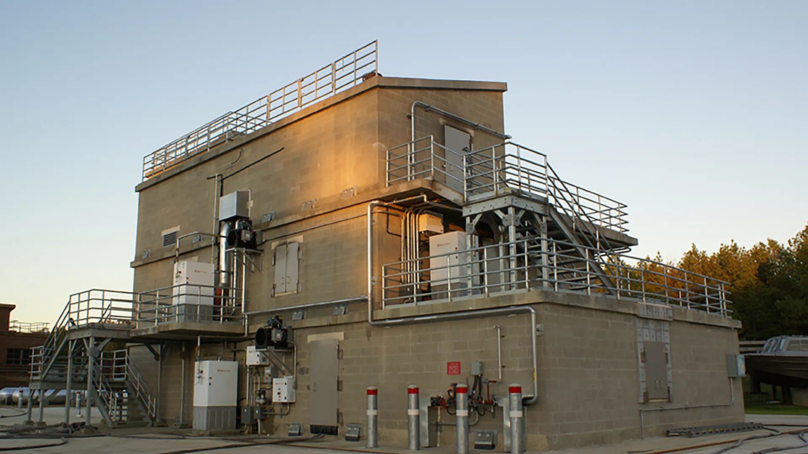
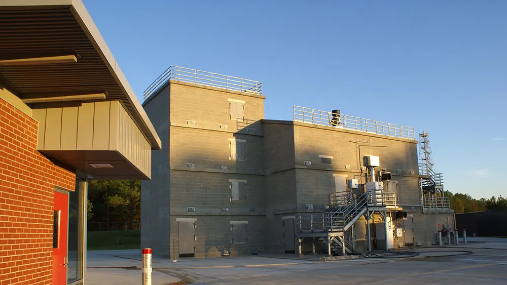
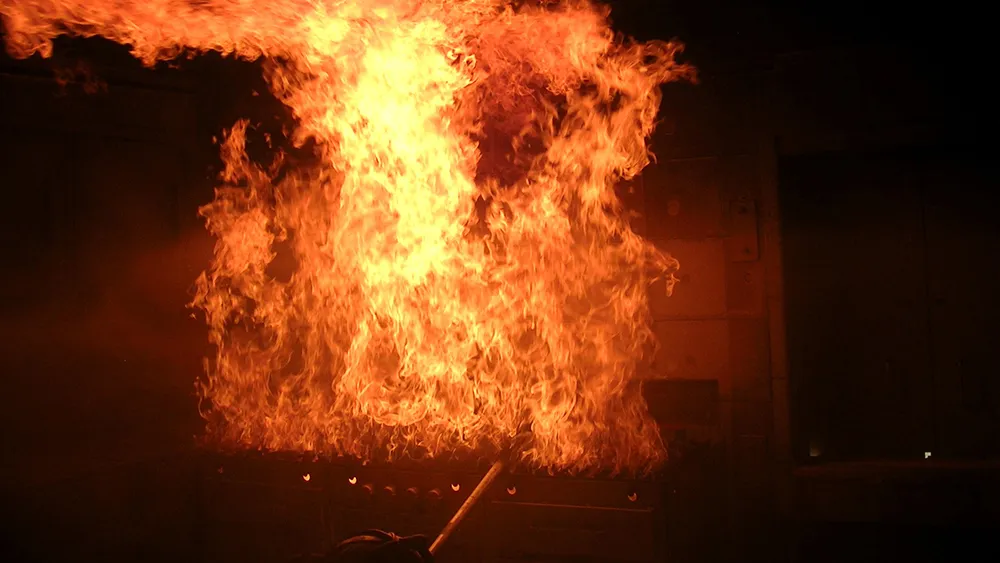

The New Burn Building at the State Fire Academy
Pearl, Mississippi
This is a highly-specialized building type that is used by fire fighting personnel from around the state for live structural fire training. The structure itself is of reinforced concrete and masonry, with special high temperature thermal liner panels. Planning was closely coordinated with sophisticated fire training systems, which are remotely operated by computer from a control building.
Completed 2006


